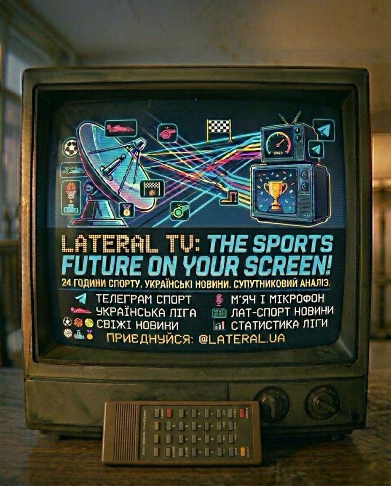

Спортивне медіа LATERAL
Спорт без зайвого шуму
Сучасне спортивне медіа з чіткою структурою, приємним візуалом, зручним переходом між напрямками та презентаційною подачею для аудиторії й партнерів.

ФутболБоксФормула 1Шахи
Counter-Strike 2БаскетболТенісDota 2
Про Lateral
Простота, у якій говорить контент.
LATERAL подає спортивний контент у структурованому форматі: без перевантаження, зайвого шуму та хаотичної навігації.
Система побудована так, щоб користувач легко та швидко оієнтувався в каналах, а партнер бачив зрозумілу презентацію каналів, аудиторії та можливостей співпраці.
Швидка взаємодія
Легка співпраця

Категорії
Ключові напрями медіа
Основні канали за видами спорту, 4 напрями з найбільшим розвитком, власним позиціонуванням і ресурсами.
Футбол
Новини, матчі, огляди та аналітика для широкої спортивної аудиторії.
Детальні розбори матчів, статистика, трансфери, аналітика та ексклюзивні матеріали.
Перейти до каналуБокс
Головні поєдинки, інформаційні приводи та структурована подача подій.
Матеріали про поєдинки, ключові інфоприводи, короткі розбори боїв і UFC.
Перейти до каналуCounter-Strike 2
Кіберспорт, турніри, сцена, формати та актуальна інформація по CS2.
Турніри, новини кіберспорту та компактна подача контенту для аудиторії.
Перейти до каналуФормула 1
Гран-прі, календар, підсумки вікендів і ключові теми паддоку.
Огляди гран-прі, аналітичні підсумки, календарі та головні теми гоночних вікендів.
Перейти до каналуКанали та Аналітика
Медіаресурси за видами спорту
Сегментація каналів за видами спорту з короткою аналітикою та посиланнями на медіаресурси.
Канал
LATERAL | Футбол
~70K підписників
Актуальні новини, огляди матчів, ключова аналітика, короткі формати та контент, який тримає в курсі всіх подій.
Аналітика
Коротка статистика каналу
20222023202420252026
Канал
LATERAL | Бокс
22K підписників
Матеріали про поєдинки, ключові інфоприводи, короткі розбори боїв і фокус на найважливіших деталях.
Аналітика
Коротка статистика каналу
20222023202420252026
Канал
LATERAL | Counter-Strike 2
7K підписників
Сцена CS2, турніри, новини кіберспорту та компактна подача контенту для аудиторії, яка хоче бачити тільки головне.
Аналітика
Коротка статистика каналу
20222023202420252026
Канал
LATERAL | Формула 1
7K підписників
Огляди гран-прі, аналітичні підсумки, календарі та головні теми кожного гоночного вікенду у зручній структурі.
Аналітика
Коротка статистика каналу
20222023202420252026
Канал
LATERAL | Баскетбол
1K підписників
Огляди матчів NBA та європейських ліг, топ-моменти, статистика і швидкий доступ до всіх платформ.
Аналітика
Коротка статистика каналу
20222023202420252026
Канал
LATERAL | Шахи
650 підписників
Партії, розбори, турніри та найцікавіші моменти зі світу шахів у короткому і зрозумілому форматі.
Аналітика
Коротка статистика каналу
20222023202420252026
Канал
LATERAL | Dota 2
500 підписників
Новини сцени, турніри, патчі та короткі аналітичні розбори для фанатів Dota 2.
Аналітика
Коротка статистика каналу
20222023202420252026
Канал
LATERAL | Теніс
400 підписників
ATP, WTA, турніри Grand Slam, аналітика матчів і найважливіші новини зі світу тенісу.
Аналітика
Коротка статистика каналу
20222023202420252026
Канал
LATERAL | Футбол ⚽ 18+
12K підписників
Контент 18+: інсайди, чутки, закулісся футболу та більш відверта аналітика для дорослої аудиторії.
Аналітика
Коротка статистика каналу
20222023202420252026
Контакти
Зв'язатися з нами
Форма для партнерств, співпраці та комерційних запитів.
Команда
Вакансії
Ми шукаємо талановитих людей у команду LATERAL. Оберіть вакансію та надішліть резюме.
Контент-менеджер
Створення та публікація спортивного контенту для Telegram, Instagram та YouTube.
Про позицію
Ми шукаємо контент-менеджера, який відповідатиме за щоденне ведення каналів платформи LATERAL. Ви будете створювати тексти, добирати візуали, планувати публікації та взаємодіяти з аудиторією.
Що ми очікуємо:
- Розуміння спортивної тематики
- Досвід ведення Telegram та Instagram
- Вміння працювати з дедлайнами
- Базове знання аналітики
Ми пропонуємо:
- Гнучкий графік роботи
- Дистанційна зайнятість
- Можливість зростання в медіасередовищі
Рекламний менеджер
Пошук потенційних рекламодавців та залучення їх до розміщення реклами в каналах LATERAL.
Про позицію
Шукаємо проактивного рекламного менеджера, який відповідатиме за пошук і залучення нових партнерів для розміщення реклами. Основний фокус — робота з холодними лідами, побудова комунікації та доведення клієнтів до запуску рекламних інтеграцій у спортивних каналах платформи.
Що ми очікуємо:
- Досвід у продажах або лідогенерації (буде перевагою)
- Вміння працювати з холодною аудиторією (outreach, direct, email тощо)
- Сильні комунікаційні та переговорні навички
- Розуміння базових принципів реклами та digital-середовища
Ми пропонуємо:
- Можливість впливати на дохід через результат
- Part-time / гнучкий формат роботи
- Перспективу зростання разом із проєктом
Відеомонтажер
Монтаж відеоконтенту для YouTube та Reels / Shorts-форматів.
Про позицію
Шукаємо монтажера для роботи з відеоматеріалами спортивних подій. Ваше завдання — швидко та якісно готувати відео для YouTube і коротких форматів у стилі LATERAL.
Що ми очікуємо:
- Досвід монтажу у Premiere Pro / DaVinci
- Розуміння коротких форматів
- Вміння працювати з темпом і динамікою
- Швидкість обробки матеріалу
Ми пропонуємо:
- Постійний потік матеріалу
- Гнучкий графік роботи
- Конкурентна оплата